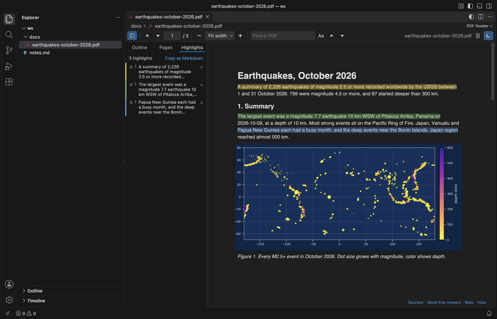

Open files in VS Code and Cursor / Office files
Open a PDF in Cursor
Cursor ships without a PDF viewer (its built-in media preview covers images, audio and video). Install PDF Reader from the Extensions view; Cursor gets it from Open VSX. Then click the PDF. You can search, read in dark mode, highlight passages and copy the highlights as Markdown with page links, which is handy for pasting into Cursor chat.
Free, MIT license. Extension ID zovo.pdf-viewer-dark, version 0.3.0. Needs VS Code 1.90.0 or newer.

Steps in VS Code
- Install PDF Reader from the Marketplace, or press Ctrl+P (Cmd+P on macOS) and run
ext install zovo.pdf-viewer-dark. - Click the
.pdffile in the Explorer. - Select text and press H to highlight it. Four colors are available.
- Run "Copy Highlights as Markdown" and paste the quotes, with their page links, into chat or a notes file.
- Press Ctrl+G to go to a page. The viewer remembers the page and zoom of each PDF.
Steps in Cursor, Windsurf or VSCodium
- Open the Extensions view with Ctrl+Shift+X (Cmd+Shift+X on macOS).
- Search for
zovo.pdf-viewer-darkand click Install. Cursor, Windsurf and VSCodium install from Open VSX, where it is published aszovo/pdf-viewer-dark. - If your editor has no gallery, download the .vsix from the Open VSX page and run "Extensions: Install from VSIX...".
- Then use it the same way as in VS Code.
What PDF Reader handles
- Dark and sepia pages that keep photos in color.
- Search with a match counter, outline and thumbnails.
- Markdown links such as
paper.pdf#page=12open at that page.
What it does not do
- Highlights are kept in the editor on this computer, not written into the PDF, and they do not sync.
- No form filling, editing or printing. PDF JavaScript never runs.
Other options
- vscode-pdf (
tomoki1207.pdf, 14.4 million installs, on Open VSX). Also on Open VSX, so it installs in Cursor. - PDF Viewer (
mathematic.vscode-pdf, 2.9 million installs, on Open VSX). Also on Open VSX.
Install counts and Open VSX status were checked on 8 November 2026. Descriptions in quotes are the extensions' own.
Questions
Why doesn't Cursor open PDFs by default?
Cursor is built on VS Code, and VS Code has no PDF viewer. Both rely on extensions for PDFs.
Can Cursor chat read the PDF?
Copy the text or your highlights from the viewer and paste them into the chat. The viewer itself sends nothing anywhere.
Does it work in Windsurf and VSCodium?
Yes. Both install extensions from Open VSX, where it is zovo/pdf-viewer-dark.
More about PDF Reader
Read the PDF Reader page for every feature and setting, or the source code on GitHub.
Related guides
- Read PDFs in dark mode in VS Code
- Open a PDF file in VS Code
- Extract pages from a PDF without uploading it
- Open a .docx Word file in VS Code
Zovo Pro and support
Zovo Pro: USD 19 once, every Zovo viewer. It turns on the Pro tools in this extension and in the other Zovo extensions you use. The free features stay free.
After a card payment your license key shows on the next page. Paste it with the command "Zovo Pro: Enter a key".
You can also support the work with no Pro:
Need your format supported?
Open a format request with a sample file, and I reply there whether it can be done. For USD 299 once, through this GitHub Sponsors tier, I add your file format or a missing feature to this extension, with tests, within 7 days.